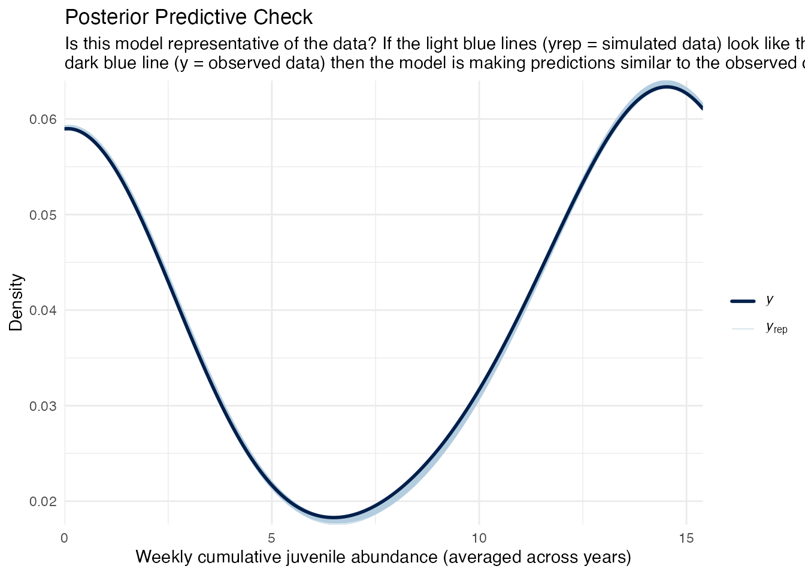

In Season Model
Josh Kroman
in_season_model_documentation.RmdOverview
The in season outmigrant abundance model aims to predict the Juvenile Production Estimate (JPE) in near-real time by leveraging historical relationships between partial season catch estimates and total seasonal outmigration.
Unlike the stock-recruit approach, which relies on adult spawner estimates, the in season model allows forecasting within the same water year. Note: these forecasts become more reliable later in the season as more data are available.
Model Objective
To develop a predictive model that estimates total spring-run Chinook outmigrant abundance at Delta entry using partial in season RST data.
Conceptual model
The framework fits historical timing curves to weekly BT‑SPAS‑X outputs (including uncertainty), then uses partial-season observations to forecast remaining weekly passage, total outmigrants, and downstream routing to the Delta.
Figure 1: Conceptual Diagram of SRJPE In Season model.
knitr::include_graphics(path = here::here("vignettes", "images", "inseason_conceptual_diagram.png")) 
Model Architecture
The in season model uses historical timing curves, BT-SPAS-X outputs from previous years, to fit probabilistic passage curves that describe weekly migration timing patterns at each trap. Weekly trap data are accumulated in season and compared to historical timing to estimate the proportion of migration already observed.Based on the accumulated observed proportion and fitted timing distributions, the model forecasts the remaining passage for the season. Estimated route fractions (e.g., to Delta) are applied.
Model Inputs
The model takes in one dataset produced by
prepare_inseason_inputs() function. This function takes in
a database connection to the model run database, a stream, a site, the
covariate you would like to use to fit the model (see
?prepare_inseason_inputs() for the full list of
covariates), and a boolean value indicating if you would like to apply
autocorrelation to the data.
Running stock recruit submodel
The model is run for a given stream, adult data type, and environmental covariate.
# run the model for battle creek and water year type
cfg <- config::get()
con <- DBI::dbConnect(RPostgres::Postgres(),
dbname = cfg$db_name,
host = cfg$db_host,
port = cfg$db_port,
user = cfg$db_user,
password = cfg$db_password)
inseason_inputs <- prepare_inseason_inputs(con, "battle creek", "ubc",
covariate_effect = FALSE,
autocorrelation = FALSE)
inseason_fit <- fit_inseason_model(inseason_inputs)Model Output
The Stock Recruit model produces a STAN fit object when run. You can
extract parameter estimates from the model object with the function
extract_inseason_estimates(). This produces a table.
inseason_estimates <- extract_inseason_estimates(inseason_inputs, inseason_fit_subset)| parameter | year | week_fit | statistic | value | model_name | site | stream | srjpedata_version |
|---|---|---|---|---|---|---|---|---|
| phi | 1999 | NA | mean | 0.5172657 | beta_dev_hbmrt | lcc | clear creek | 0.0.2 |
| phi | 1999 | NA | se_mean | 0.0005400 | beta_dev_hbmrt | lcc | clear creek | 0.0.2 |
| phi | 1999 | NA | sd | 0.0237471 | beta_dev_hbmrt | lcc | clear creek | 0.0.2 |
| phi | 1999 | NA | 2.5 | 0.4748207 | beta_dev_hbmrt | lcc | clear creek | 0.0.2 |
| phi | 1999 | NA | 25 | 0.5009836 | beta_dev_hbmrt | lcc | clear creek | 0.0.2 |
| phi | 1999 | NA | 50 | 0.5163066 | beta_dev_hbmrt | lcc | clear creek | 0.0.2 |
| phi | 1999 | NA | 75 | 0.5326806 | beta_dev_hbmrt | lcc | clear creek | 0.0.2 |
| phi | 1999 | NA | 97.5 | 0.5679647 | beta_dev_hbmrt | lcc | clear creek | 0.0.2 |
| phi | 1999 | NA | n_eff | 1933.6832388 | beta_dev_hbmrt | lcc | clear creek | 0.0.2 |
| phi | 1999 | NA | Rhat | 1.0014891 | beta_dev_hbmrt | lcc | clear creek | 0.0.2 |
The following plots show in season model results.
SRJPEmodel::generate_results_plot_inseason(inseason_inputs = inseason_inputs, con = con)
generate_diagnostic_plot(inseason_inputs, inseason_fit_subset)
#> [1] "beta_dev_hbmrt"
Resources